魔方
文章目录
一 、魔方的结构
魔方共6色6面，每面又分为中央块（最中间的块6个）、角块（4角的块8个）和 边块（4条边中间的块12个）。其中中央块只有1个面，他们是固定的结构，所以中央是红色的块，那么其他的红色都要向这个面集中。而且红色的中央块对面永远是橙色中央块（国际标准是这么规定的）。边块有2个面2个颜色，角块有3个面3个颜色。
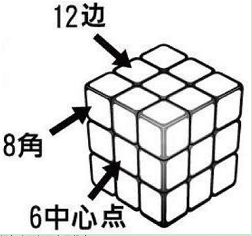
把每个面都用字母代表
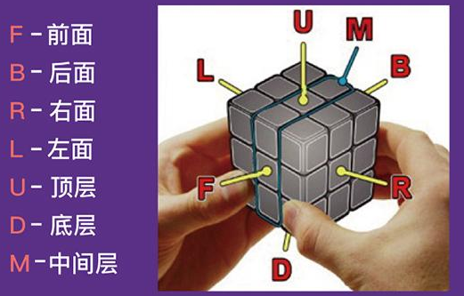
破解魔方时会用字母来说明要转动的1层或1面以及方向，例如：R(代表右面顺时针转90度)，R`(代表右面逆时针转90度)，R2(代表右面顺时针转2次90度)。 如图所示：
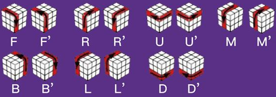
但是要说明的是：每面的名称是相对的，例如F是前面，就是手拿魔方时面向自己的一面，若把模仿旋转到另一面，那么就有新的一面成为前面。
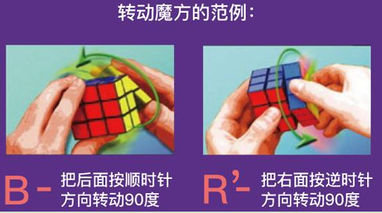
二 、魔方的还原方法 方法一：传统还原法 1.先将中间是白色块的一面对着上面，然后在顶部做出白十字，就是其他颜色的块都到相应的位置（小复杂，见图示，注意上面标的口诀哦，照做无误）。
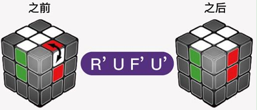
2.然后将白色的角块归位（看图比较容易理解哦）
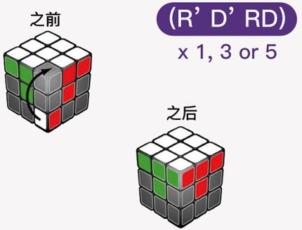
3.接着让中层边块归位，把白色面转向下，找出红绿边块，若红绿边块在顶层的话那就按顺时针方向转动顶层，直到边块与图上的1个情况相同，在按照口诀转动魔方，使得边块归位。若红绿边块在中间某层，但位置错误或颜色错误，可以先让红绿边块在右前方的位置，再重新按照下面其中的一个次序旋转1次。
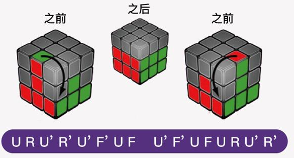
4.再将顶层（应该是黄色）边块调整向上，做出黄十字。若按照口诀转动1次之后，顶层没有出现黄色的十字，可按照口诀重复转动，直到黄色十字出现为止。
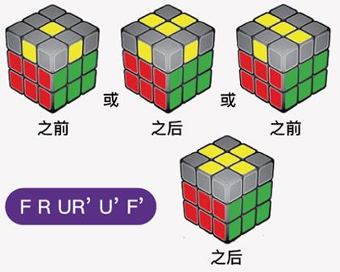
5.下一步将魔方的黄色角块调整到十字周围，这里有点难度，看口诀提示吧。
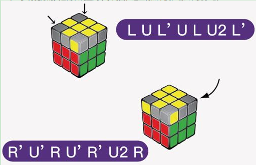
6.通常这个时候黄色的块，和侧面的颜色会有错位产生，根据口诀将四角的黄色块定位。
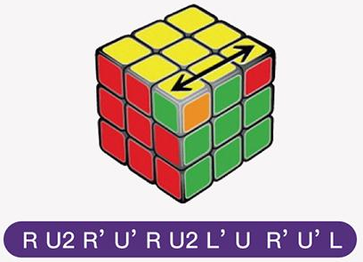
7.最后将边上的色块再调整到对应的位置，就大功告成了！
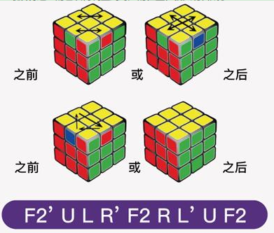
跟着方法一的魔方公式，7步就可以将魔方还原。但这些公式啊口诀啊太复杂，又有难度，感觉实际操作起来还是比较费心烧脑。
基本公式： 公式1：[右上 + 顶顺 + 右下 + 顶逆] —-> 右层向上转90度，顶层顺时针转90度，右层向下转90度，顶层逆时针转90度 公式2：[左上 + 顶逆 + 左下 + 顶顺] —-> 左层向上转90度，顶层逆时针转90度，左层向下转90度，顶层顺时针转90度
一.拼底层 1.1 底层十字(先拼顶层，再翻转魔方变成底层，要求：十字 + 棱块颜色正确) 十字一般好弄，颜色一致怎么弄？？？旋转顶层，会发现最少有两个棱块的颜色能和中心块一致，运气好四个都一致（不存在三个一致的） 1.1.1 如果颜色一致的棱块是相邻的两边，把两边放到左面和前面上，然后[公式1 + 右上] 1.1.2 如果颜色一致的棱块是相对的两边，把两边放到前面和后面上，然后[公式2 + 左上]，就和1.1.1一样了 ！！！！！翻转魔方，顶层变底层，形成底层十字。这时底层白色，顶层黄色
1.2 底层角块（共4个） 1.2.1 观察顶层有底层颜色（白色）的角块（每个角块有三个颜色），将角块转到对应的顶角上(比如角块是白蓝绿，对应的顶角就是中心块为蓝绿所对应的顶角上)，旋转魔方看看 1.2.1.1 如果底层颜色朝左(应该是左前顶角)，则[公式2] 1.2.1.2 如果底层颜色朝右(应该是右前顶角)，则[公式1] 1.2.1.3 如果底层颜色朝上，旋转顶层让角块在右前顶角的位置，则[公式1 * 3] 1.2.1.4 如果底层颜色朝前,如果是左前顶角，逆时针旋转魔方，就和1.2.1.2一样了，如果是右前顶角，顺时针旋转魔方就，和1.2.1.1一样了 1.2.2 观察底层角块，如果底层角块位置对但是颜色不对(应该只有这种情况)， 旋转魔方让角块在右前底角，一直执行[公式1]直到位置颜色正确
二.拼中间层（第二层） 中间层主要是四个棱块拼好就行，仔细观察可以发现中间层的棱块颜色不能包含底层（白色）和顶层（黄色）的颜色块 2.1 找到顶层不包含底层颜色（白色）和顶层颜色（黄色）的棱块，旋转顶层，让该棱块朝前的颜色和魔方前面中心快的颜色一致，再看该棱块朝上的颜色对应的面（面的中心块颜色一致）是左面还是右面 如果是左面，则[顶逆 + 公式2]，魔方整体逆时针转90度（转之前因该有个白色块会再左前顶角上，转了之后白色块到右前顶角上），就和1.2.1.2一样了 如果是右面，则[顶顺 + 公式1]，魔方整体顺时针转90度（转之前因该有个白色块会再右前顶角上，转了之后白色块到左前顶角上），就和1.2.1.1一样了 注意这里的顶顺或顶逆，是让棱块朝上的颜色（比如红色）远离其中心块是对应颜色（红色）的面
2.2 这个时候如果中间层有棱块没有归位（1个或2个） 选择一个棱块，把该棱块放到左面（左前中间层），执行[公式2]，这时会有白色角块移到顶层，应该就和1.2.1.1一样了，执行对应公式后该棱块被移动到顶层，再按2.1处理可完成 重复这个操作把所有棱块归位
三.拼顶层 3.1 顶层十字（仅十字，不要求棱块颜色正确） 这个时候顶层有四种情况（无一致 –> 拐弯直角 –> 直线 –> 四棱块正确） 3.1.1 顶层四个棱块颜色都和中心块一致，OK了 3.1.2 顶层有两个棱块的颜色和中心块一致，棱块是相对的两边（两个棱块加中心块呈一条直线） 旋转魔方，让两个棱块加中心块组成的直线和前面平行，[前顺 + 公式1 + 前逆]，就和3.1.1一样了 3.1.3 顶层有两个棱块的颜色和中心块一致，棱块是相邻的两边（两个棱块加中心块呈一个拐弯直角） 旋转顶层，让两个棱块分别在前面和右面（顶层拐弯直角在右前角），[前顺 + 公式1 + 前逆]，就和3.1.2一样了 3.1.4 顶层没有棱块颜色和中心块一致 [前顺 + 公式1 + 前逆]，就和3.1.3一样了
3.2 顶层棱块颜色正确 旋转顶层，会发现最少有两个棱块的颜色能和中心块一致，运气好四个都一致(不存在三个一致的情况) 3.2.1 如果颜色一致的棱块相邻的两边，把两边放到左面和后面上，然后[前顺 + (公式1 * 2) + (前顺 * 2) + 公式2 + 前顺] 3.2.2 如果颜色一致的棱块相对的两边，把两边放到前面和后面上，然后[前顺 + (公式1 * 2) + (前顺 * 2）+ 公式2 + 前顺]，就和3.2.1一样了
3.3 顶层角块 3.3.1 调整角块位置（只看位置，不看颜色） 3.3.1.1 四个角块位置都正确，不用处理了 3.3.1.2 有一个角块的位置正确 看顶层三个位置不对的角块，看看应该怎么移动才能到正确位置， 3.3.1.2.2 如果是顺时针移动能到正确位置，将位置正确的角块放在左前顶角，执行[(公式2 * 3) + 右上 + (公式2 * 3) + 右下] 3.3.1.2.3 如果是逆时针移动能到正确位置，将位置正确的角块放在右前顶角，执行[(公式1 * 3) + 左上 + (公式1 * 3) + 左下] 3.3.1.3 顶层角块的位置都不对 按3.3.1.2.2公式执行，不用关心位置(或按3.3.1.2.3公式执行，不用关心位置)，就和3.3.1.2一样了 3.3.2 调整角块颜色 旋转魔方将顶层变左层（左侧黄色），将需要调整颜色的角块放到左后顶角，注意：后续调整不能整体旋转魔方，只能旋转左层 如果和左层中心颜色一致的朝上，则[公式1 * 4] 如果和左层中心颜色一致的朝后，则[公式1 * 2] 需要反复调整，直到调整完所有角块，中间不要管其他层颜色，最后会调整好
文章作者 nanshusu
上次更新 2021-08-26